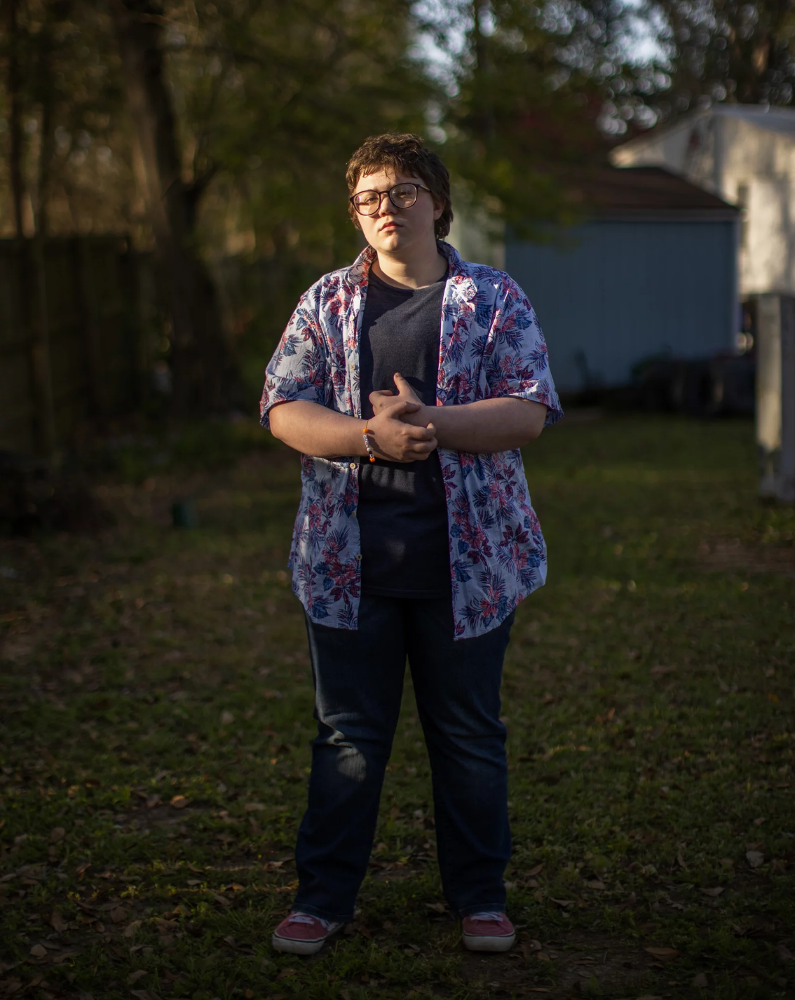
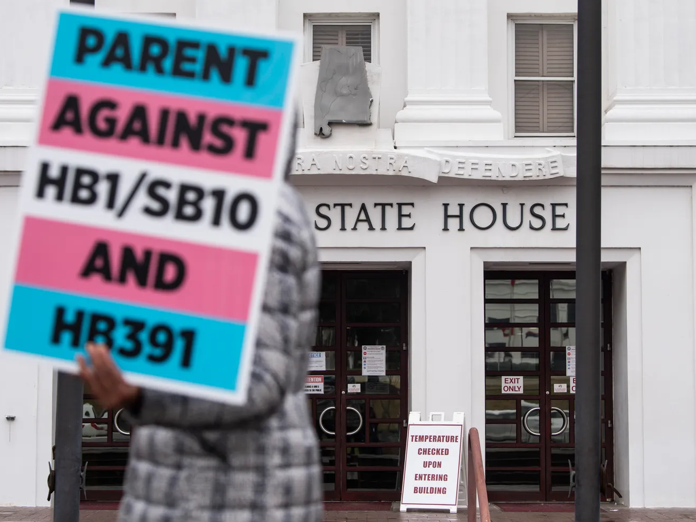
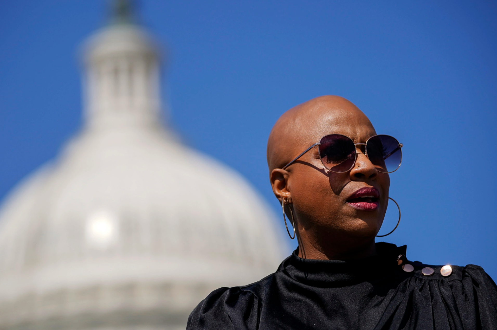
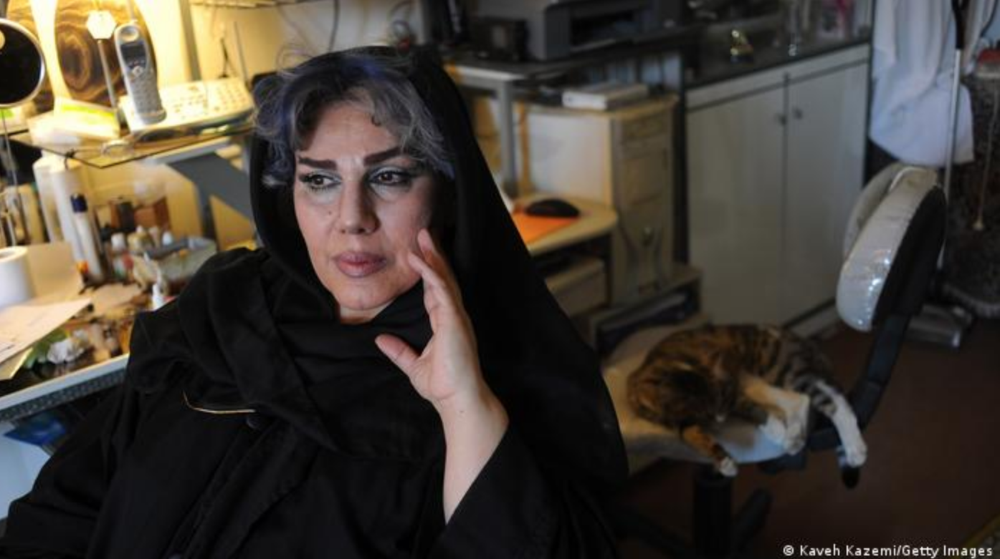
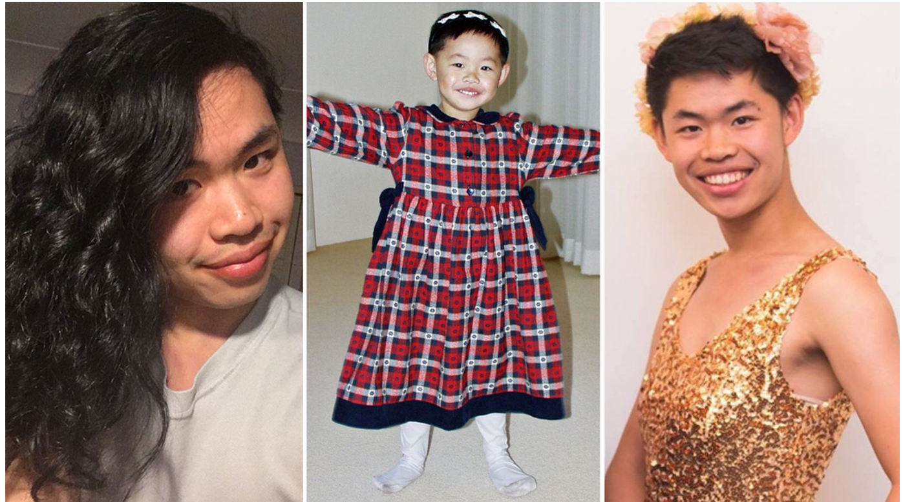
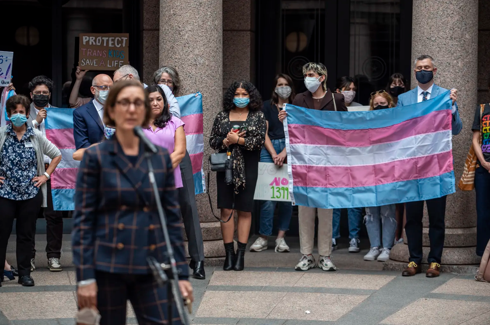

'It's Hurtful': Trans Youth Speaks Out As Alabama Debates Banning Medical Treatment
Gov. Kay Ivey signs bill banning transgender youth from public school sports in Alabama
Fatal Violence Against the Transgender and Gender Non-Conforming Community in 2020
Violence Against Women Act to offer support to LGBTQ survivors
Oscar-Nominated ‘Umbrella Academy’ Star Elliot Page Announces He Is Transgender
Demi Lovato is non-binary and is changing pronouns to they/them, singer announces
Drag Race UK: 'I came out to my mum as non-binary watching the show'
UK theatres promise to only cast trans actors in trans roles'
How the LGBTI community is surviving the COVID-19 pandemic in Indonesia
Cameroon jails transgender women for 'attempted homosexuality'
Iran: How transgender people survive ultraconservative rule
'I don’t see myself as a man or woman'
New York repeals 'walking while trans' law after years of activism

Gender-affirming medical treatment for transgender kids would be considered child abuse under Texas Senate bill
